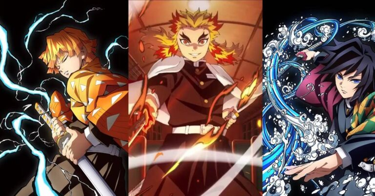
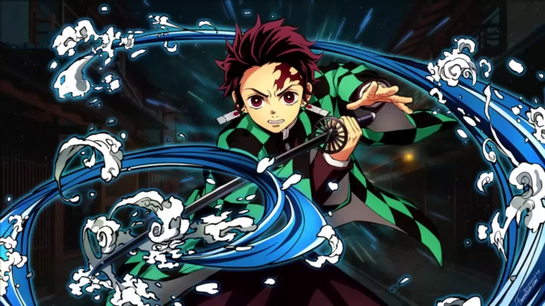
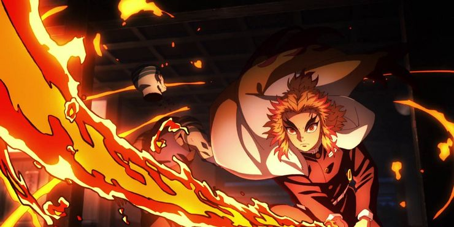
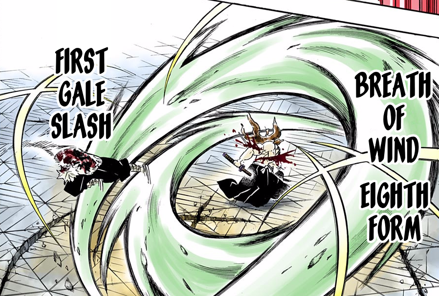
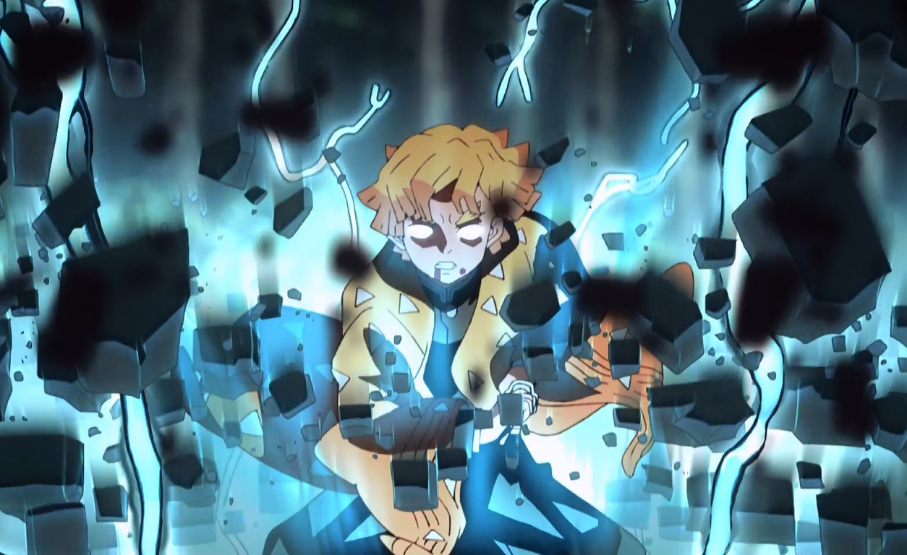
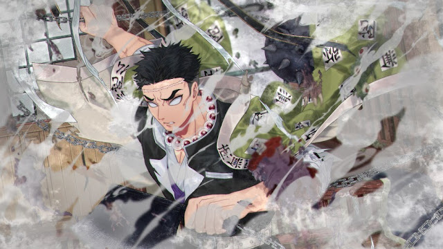
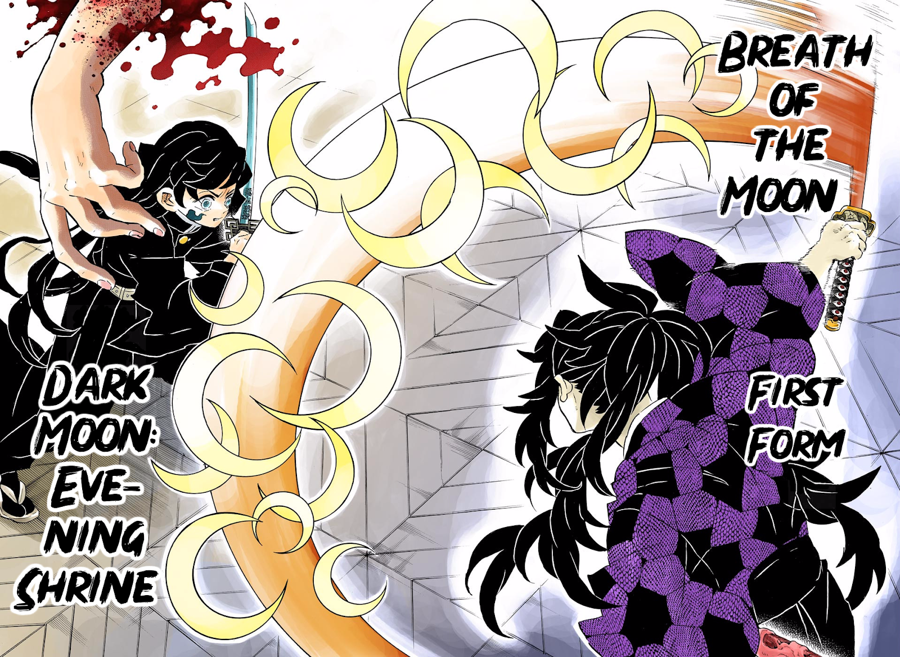

Origens da respiração
Mais de 500 anos antes Yoriichi Tsugikuni era um Demon Slayer durante a Era Sengoku,
também conhecida como a Idade de Ouro dos Demon Slayers. Ele era o Demon Slayer mais poderoso de seu tempo e
talvez o mais poderoso de todos os tempos.
Ele inventou a Respiração Solar em algum momento de sua vida, embora exatamente quando não esteja claro.
Esse tipo de respiração não apenas gerou todas as outras formas de respiração, mas também tem treze de
suas próprias formas. Após a morte de Yoriichi, foi perdido até que Tanjiro o reviveu através de sua
dança familiar.

As cinco formas principais

Água, Chama, Trovão, Pedra e Respiração do Vento não são apenas as cinco formas mais comuns de
Respiração,
mas também são as cinco primeiras a seguir depois que a Respiração Solar foi criada. Cada um foi
inventado
por um dos alunos de Yoriichi que não conseguiram dominar a Respiração Solar e, em vez disso, fizeram
algo
semelhante que atendeu às suas próprias forças e fraquezas . Quase todos os formulários recebem o nome
do
elemento que está sendo visualizado à medida que o usuário utiliza a técnica.
Water Breathing é a mais comum, por ser a mais fácil de aprender. Tem dez formas totais, embora
algumas possam ser combinadas para criar variantes.

Flame Breathing é uma forma poderosa, mas altamente ofensiva, com nove técnicas, mas apenas seis
atualmente conhecidas pelos espectadores.

Wind Breathing também é ofensivo e se concentra em barras, e tem nove formas conhecidas.

Thunder Breathing usa a velocidade como sua habilidade principal e, ao contrário dos outros, é nomeado
pelo
som que os usuários criam ao usar o relâmpago. Ele tem seis, talvez sete formulários, embora apenas um
usuário seja conhecido por ser capaz de utilizar mais do que o primeiro.

Stone Breathing é um pouco mais defensivo do que os outros e se concentra na estabilidade e força.
Possui
cinco técnicas conhecidas, mas apenas dois usuários conhecidos, nenhum dos quais usa uma lâmina
tradicional.


Enquanto Yoriichi inventou a Respiração Solar, e seus alunos derivaram cinco estilos dela, seu irmão gêmeo
também a modificou em outra técnica: Respiração Lunar. Este estilo foi originalmente desenvolvido quando
Kokushibo dominou a Respiração de Concentração Total, embora muito mais tarde ele foi capaz de modificá-lo e
fortalecê-lo muito como uma Arte Demoníaca de Sangue . Devido ao desenvolvimento de longa data deste estilo,
ele possui 16 formas diferentes, mas é improvável que qualquer Demon Slayer seja capaz de realizá-las.